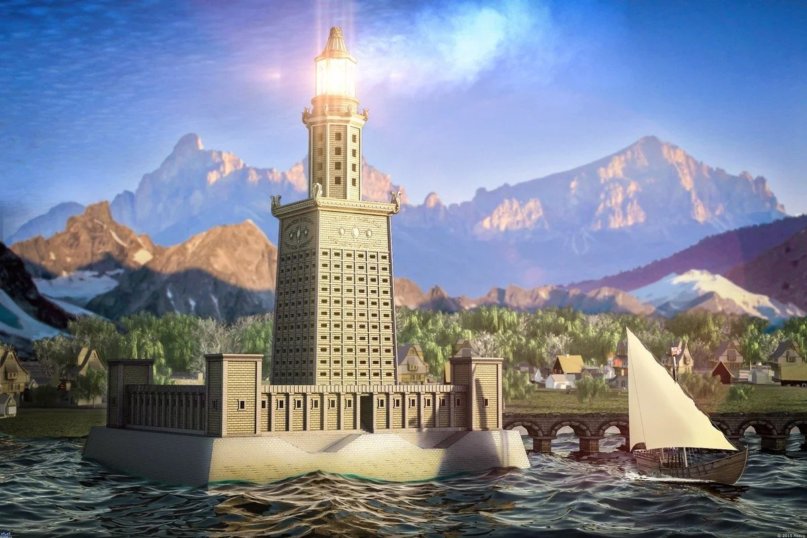
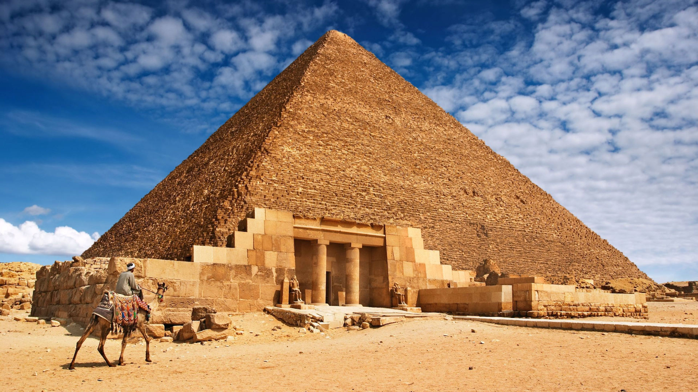
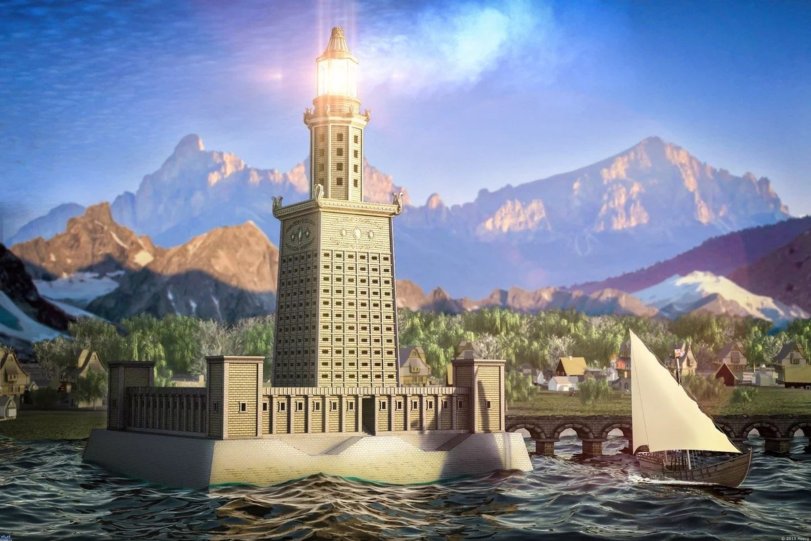

Новые семь чудес света – проект, целью которого стал поиск современных семи чудес света. Организован некоммерческой организацией New Open World Corporation (NOWC) по инициативе швейцарца Бернара Вебера. Выборы новых семи «чудес света» из известных архитектурных сооружений мира происходили через SMS, телефон или интернет. 7 июля 2007 года, в день «трёх семёрок», в столице Португалии Лиссабоне были названы новые семь чудес света.
Почему выбрали новые чудеса света?

Чудеса света - архитектурные шедевры, которые радуют человеческий глаз. Но, к огромному сожалению, практически все чудеса Древнего Мира разрушены. Единственное чудо света, дошедшее до нас - Пирамида Хеопса. Этот факт не может не огорчать. По этой причине люди и решили создать новый список чудес света, чтоб смотреть на настоящие памятники архитектуры, а не их древние изображения и описания, дошедшие до наших дней.
Что произошло с чудесами Древнего мира?

Как выбирали новые чудеса света?
В 2000 году швейцарская компания, основанная Бернардом Вебером, взяла на себя инициативу создать новый список. Во время Олимпийских игр в Сиднее всем странам было предложено проголосовать по телефону или SMS. Правительства всех стран были так воодушевлены этим голосованием, что организовали огромные кампании и сделали для голосующих граждан стоимость звонков и SMS бесплатными!
Естесвтенно, существовал список критериев, по которомы отбирали чудеса света. Кандидаты в этот список обязательно должны быть построены руками человека.Также памятник должен иметь большую культурную и историческую ценность, которая отражает разнообразие человеческих культур мира.Кроме того, учитывали доступные инструменты и технологические возможности людей на тот момент времени, когда был построен памятник, а сооружения, которые были построены относительно недавно или требующие радикальной реставрации не рассматривались.
| Нужна ли виза? | Прямой рейс из РФ | Лучший сезон | |
|---|---|---|---|
| Колизей | Шенгенская виза | Нет, необходима пересадка в Ереване или Баку | Апрель-Июнь; Сентябрь - Октябрь. |
| Мачу-Пикчу | Нет | Нет, необходимы 2 пересадки в Стамбуле, Мадриде | Май-Сентябрь; |
| Великая Китайская Стена | Туристическая разовая виза 45€ | Да | Апрель - Май; Сентябрь-Октябрь; |
| Тадж-Махал | Туристическая виза 60€ | Нет, необходимы 2 пересадки в Дели, Джайпуре | Ноябрь-Март; |
| Петра | Разовая виза по прилете 52€ | Нет, необходима пересдака в Стамбуле | Сентябрь - Декабрь; |
| Статуя Христа-Искупителя | Нет | Нет, необходимы 2 пересадки в Стамбуле и Сан-Паулу | Сентябрь-Октябрь; |
| Чичен-ица | Нет | Нет, необходимы 2 пересадки в Белграде и Цюрихе | Ноябрь-Март; |